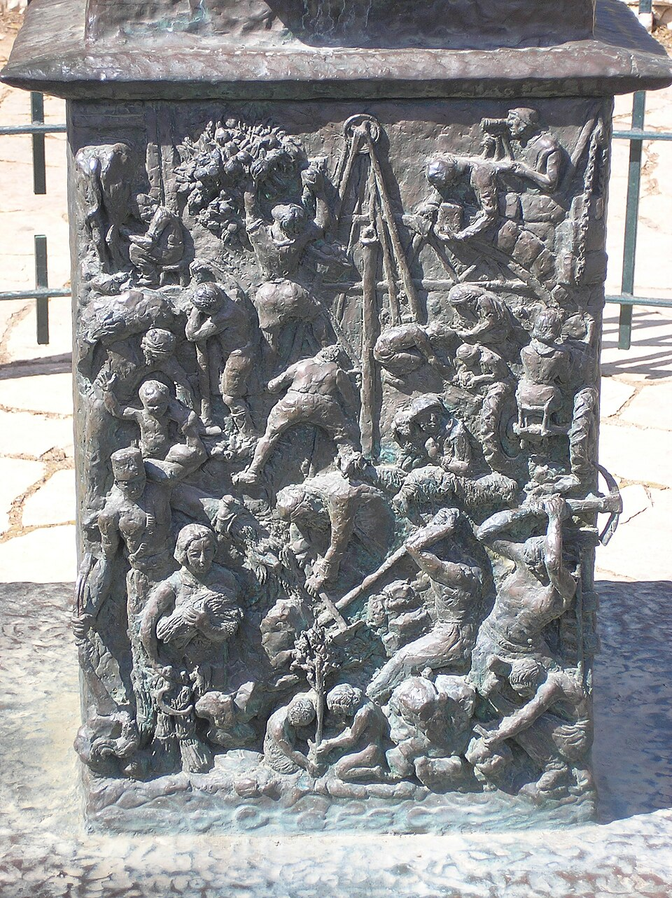

सिंधु जल संधि पर भारत का रुख स्पष्ट, विदेश मंत्रालय ने कहा- कोई बदलाव नहीं
पाकिस्तान के मंत्री मुसादिक मसूद मलिक के नई दिल्ली दौरे के बीच विदेश मंत्रालय ने स्पष्ट किया है कि 1960 की सिंधु जल संधि पर भारत के रुख में कोई बदलाव नहीं आया है।

विदेश मंत्रालय ने शुक्रवार को स्पष्ट किया कि 1960 की सिंधु जल संधि (IWT) पर भारत की स्थिति में कोई बदलाव नहीं हुआ है। यह बयान ऐसे समय आया है जब पाकिस्तान के जलवायु परिवर्तन मंत्री मुसादिक मसूद मलिक शंघाई सहयोग संगठन (SCO) के सभ्यतागत संवाद मंच में शामिल होने के लिए नई दिल्ली पहुंचे हैं।
पाकिस्तान के मंत्री मलिक ने अपनी यात्रा के दौरान संधि पर तीखे बयानों से बचते हुए कहा कि उनकी यह यात्रा और चर्चाएं पूरी तरह से बहुपक्षीय (multilateral) ढांचे के तहत हैं। उन्होंने द्विपक्षीय मुद्दों पर बात करने से परहेज किया और मुख्य रूप से क्षेत्रीय संवाद पर जोर दिया।
बता दें कि 2025 के पहलगाम आतंकी हमले के बाद भारत ने 1960 की सिंधु जल संधि को स्थगित कर दिया था, जिस पर पाकिस्तान की तरफ से तीखी प्रतिक्रियाएं सामने आई थीं।
और पढ़ें
बांग्लादेश में राजनीतिक हिंसा तेज, बीएनपी और अवामी लीग समर्थकों में झड़प
बांग्लादेश में बीएनपी और अवामी लीग समर्थकों के बीच भड़की हिंसा के बाद देश भर में बॉर्डर गार्ड बांग्लादेश के 90 प्लाटून तैनात किए गए हैं।
अंतरराष्ट्रीयअमेरिका के न्यूयॉर्क में सड़क हादसे में तेलंगाना के 25 वर्षीय युवक की मौत
अमेरिका के न्यूयॉर्क में सड़क हादसे में तेलंगाना के 25 वर्षीय ई. साई तेजा की मौत हो गई। इंटरस्टेट 90 हाईवे पर उनकी कार एक हिरण से टकरा गई थी, जिसके बाद पीछे से आ रही वैन ने टक्कर मार दी।
अंतरराष्ट्रीयईरान के रिवोल्यूशनरी गार्ड ने बहरीन में अमेरिकी रडार को बनाया निशाना
ईरान के रिवोल्यूशनरी गार्ड कॉर्प्स (IRGC) ने बहरीन में दो अमेरिकी पैट्रियट एयर डिफेंस रडार पर मिसाइल और ड्रोन से हमला करने का दावा किया है।

अंतरराष्ट्रीयइजरायल के पूर्व पीएम नफ्ताली बेनेट ने नेतन्याहू के नेतृत्व में काम करने से किया इनकार
इजरायल के पूर्व प्रधानमंत्री नफ्ताली बेनेट ने गादी आइजेनकोट के नेतृत्व में सरकार बनाने का समर्थन किया है। उन्होंने बेंजामिन नेतन्याहू या उनके गुट के साथ काम करने की संभावना को खारिज कर दिया है।